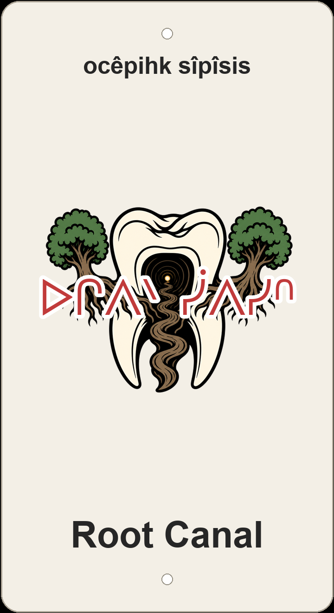

"root creek/canal"

3D-printed sign: molar-and-root screenprint framed by trees, ocêpihk sîpîsis on the plaque.
Root Canal in mountain-bike English is a dentist joke layered on a rooty line: the trail threads through tree roots the way a drilled canal threads through a tooth, and the screenprint makes that image literal — a molar whose root canal becomes a twisting trail, framed by two trees whose roots form the path. The English name carries the dental pun; the plaque does not.
The Cree on the sign is ocêpihk sîpîsis — ocêpihk 'root' + sîpîsis 'small channel/creek' — glossed as 'root creek/canal.' It keeps the botanical root and a water-channel reading of canal, with no extra innuendo in nêhiyawêwin. Two renderings considered but not carved: ocêpihk meskanaw 'root channel/trail' names the tread itself; wîpit-ocêpihk 'tooth-root (canal)' would have nailed the dentist humour head-on.
In Hawrelak the nicknames braid together: Back Breaker (ospiskani-pîkohikêw) is the rooty spine-companion to Root Canal; Lower Back Breaker (nîhtâwi-pâspâwakanikêw) sits nearby on the same ravine web, alongside Hawrelak Outer Trail (Hawrêlak wayawîyâk meskanaw), Up and Down - McKinnon (ohpiw mîna nîhtâw McKinnon), Money $hot (sôniyâw-sîkinikêwin), Bobsled (soskwaciwê-otâpânâsk), MacKenzie Ravine (Makênsi paskwâw), Riverside Traverse (sîpiy-cîki âsowahamêw), Hawrelak Park Access (Hawrêlak pîhtokêwi-meskanaw), Riverside Dr Descent (sîpiy-cîki meskanaw nîhtâciwin), Crazy Maria (kîskwêw Mariya), and Wonder Woman (mâmaskâci-iskwêw) — English wordplay mapped back onto the same hillside.
Like every sign in this series, Root Canal sits on ᓀᐦᐃᔭᐤ ᐊᐢᑭᕀ Nêhiyaw-Askiy — Plains Cree territory, Treaty 6, and a homeland of the Métis Nation. These plaques are one way of putting nêhiyawêwin back on the land it was always spoken on.
A ~756 m Hawrelak line with about 6 m of descent and ~11 m of ascent — a short root-threading connector in the MacKinnon Ravine web beside Back Breaker and the other Hawrelak nickname trails. Tap through to Trailforks on the poster for the mapped line and rider reports.
Explore the trail on Trailforks for maps, conditions, and details.
ocêpihk 'root' + meskanaw; mirrors a root-filled channel.
wîpit 'tooth' + root = dental pun explicit.
| English | SRO | Syllabics |
|---|---|---|
| root creek/canal (the plaque) | ocêpihk sîpîsis | ᐅᒋᐱᐠ ᓰᐱᓯᐢ |
| root channel/trail | ocêpihk meskanaw | ᐅᒋᐱᐠ ᒣᐢᑲᓇᐤ |
| tooth-root (canal) | wîpit-ocêpihk | ᐎᐲᓱ ᐅᒋᐱᐠ |
| root (plant/tree) | ocêpihk | ᐅᒋᐱᐠ |
| small channel/creek | sîpîsis | ᓰᐱᓯᐢ |
| road, trail, path | meskanaw | ᒣᐢᑲᓇᐤ |
| tooth | wîpit | ᐎᐲᓱ |
SRO uses ê î ô â. Syllabics match the SRO shown.
Dialectal preferences may affect minor spelling choices; check local norms for signage.
References: itwêwina, Online Cree Dictionary, Plains Cree Dictionary
Each sign is 3D printed in Edmonton. Want one for your own trail, cabin or wall? Email hello@nehiyomtb.ca.